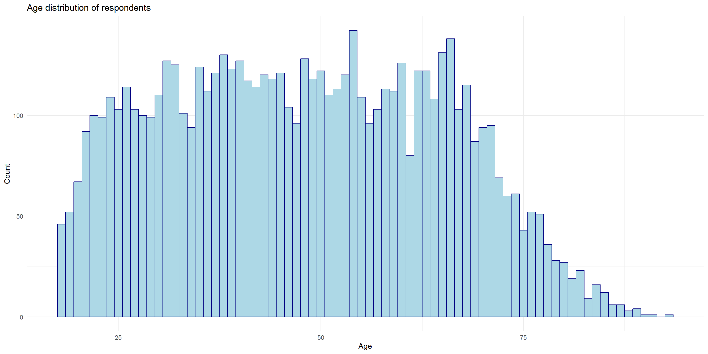
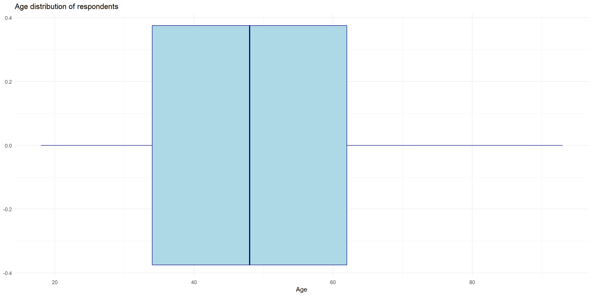
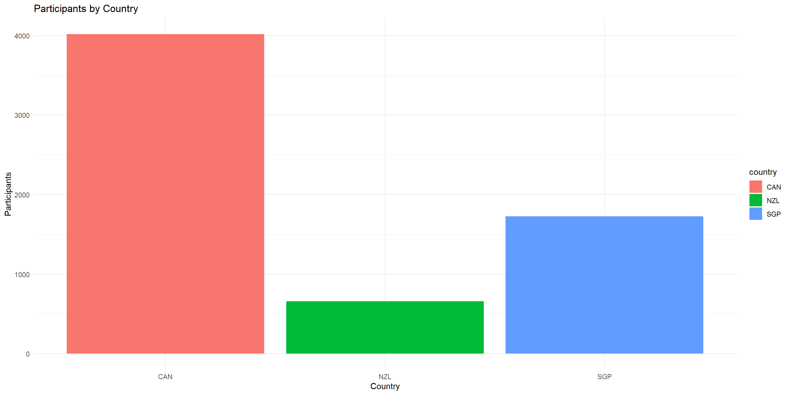
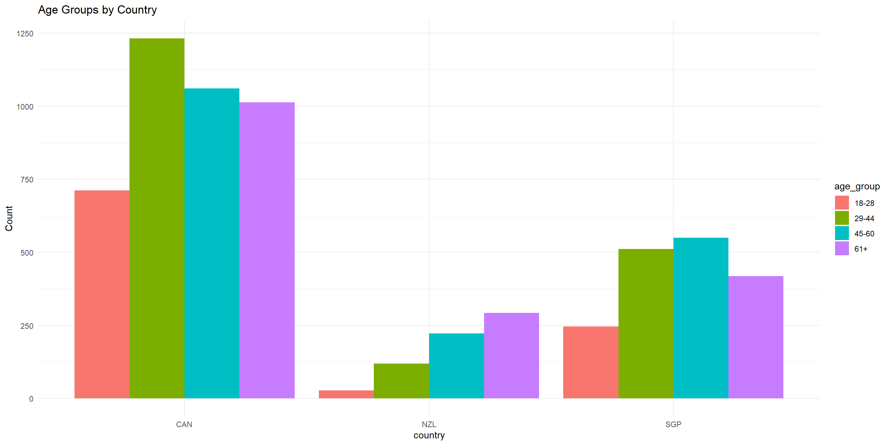

# import tidyverse library
library(tidyverse)
# read the CSV with Chile voting data
chile_data <- read_csv("data-output/chile_voting_processed.csv")
chile_data <- chile_data |>
mutate(across(c("region", "sex", "education", "vote", "age_group", "support_level"), as.factor))
#reordering
chile_data <- chile_data |>
mutate(education = factor(education,
levels = c("P", "S", "PS"),
ordered = TRUE))
# peek at the data, pay attention to the data types!
glimpse(chile_data)Data Visualization and Descriptive Stats
Bella Ratmelia
Today’s Outline
- Descriptive Statistics
- Data Visualization in ggplot using Chile voting data, including guidelines on how to choose the appropriate visualization.
Checklist when you start RStudio
- Load the project we created last session and open the R script file.
- Make sure that
Environmentpanel is empty (click on broom icon to clean it up) - Clear the
ConsoleandPlotstoo. - Re-run the
library(tidyverse)andread_csvportion in the previous session
Refresher: Loading from CSV into a dataframe
Use read_csv from readr package (part of tidyverse) to load our data into a dataframe
Basic R Functions for Descriptive Statistics
Descriptive statistics provide summaries about the sample and observations made. These summaries can be quantitative (summary statistics) or visual (graphs).
Let’s explore some basic R functions for descriptive statistics using our Chile voting data.
mean(): arithmetic averagemedian(): middle valuesd(): standard deviationvar(): variancerange(): range of valuesIQR(): interquartile rangesummary(): provides a summary of descriptive statisticsMode()function fromDescToolspackage: the most frequently occuring value 1
Exploring Age Distribution
Let’s start by examining the age variable in our dataset.
library(DescTools)
# Basic statistics
mean_age <- mean(chile_data$age, na.rm = TRUE)
median_age <- median(chile_data$age, na.rm = TRUE)
sd_age <- sd(chile_data$age, na.rm = TRUE)
range_age <- range(chile_data$age, na.rm = TRUE)
iqr_age <- IQR(chile_data$age, na.rm = TRUE)
mode_age <- DescTools::Mode(chile_data$age, na.rm = TRUE)
# Print results
cat("Mean age:", mean_age, "\n")Exploring Age Distribution
Mean age: 38.29 Median age: 36 Standard deviation of age: 14.66718 Range of age: 18 to 70 Interquartile range of age: 24 Most frequently occuring age: 21 36 Min. 1st Qu. Median Mean 3rd Qu. Max.
18.00 25.00 36.00 38.29 49.00 70.00 Interpreting Age Statistics
Some possible interpretation:
- Median is lower than mean, suggesting a slight skew towards older ages
- Mode is much lower than both mean and median, indicating a cluster of young adults
- With a standard deviation of about 14.67 years, we can expect roughly two-thirds of the participants to fall between 23.62 and 52.96 years old
- Middle 50% of participants fall between 25 and 49 years old
It’s much easier if we have a graph to visualize these interpretations!
Visualizing data with ggplot
ggplotis plotting package that is included insidetidyversepackageworks best with data in the long format, i.e., a column for all the dimensions/measures and another column for the value for each dimension/measure.
Visualizing data with ggplot

Anatomy of ggplot code
Charts built with ggplot must include the following:
1chile_data |>
2 ggplot(aes(x = age)) +
3 geom_bar(fill = "lightblue") +
4 labs(title = "Age distribution of respondents",
x = "Age",
y = "Count") +
5 theme_minimal()- 1
- Data - the dataframe/tibble to visualize.
- 2
- Aesthetic mappings (aes) - describes which variables are mapped to the x, y axes, alpha (transparency) and other visual aesthetics.
- 3
- Geometric objects (geom) - describes how values are rendered; as bars, scatterplot, lines, etc.
- 4
- Provide titles and labels to your graph
- 5
- (Optional) apply a theme/look to your graph
Going back to our data
Our PI has asked us to generate visualizations to address these questions about the Chile voting data. The PI also has asked us to write down our interpretation of the visualizations.
- What’s the distribution of respondents’
statusquosupport? - What’s the distribution of
votes? - What’s the percentage of the voting intentions on each region?
- Is there any major divide in terms of support for the statusquo across age? Visualize the distribution of
ageandstatusquo. - What does the voting intention look like across different education level? Visualize the distribution of
voteintention on variouseducationlevel. - Do people’s voting intention matches their level of support to the status quo? Compare the distribution of
statusquoacross differentvoteintentions.
Tip: open the ggplot cheatsheet
Tip
A strategy I’d like to recommend: briefly read over the ggplot2 documentation and have them open on a separate tab. Figure out the type of variables you need to visualize (discrete or continuous) to quickly identify which visualization would make sense.
Task #1
What’s the distribution of our respondents’ statusquo?
Task #1

Task #2
What’s the distribution of votes?
Task #2

Task #3
What’s the percentage of the voting intentions on each region?
Task #3

Group exercise #1 (solo attempts also ok)
Visualize the vote intention by sex. Make sure it is shown as proportion.
Group exercise #1 (solo attempts also ok)

Task #4
Is there any major divide in terms of support for the statusquo across age? Visualize the distribution of age and statusquo.
Task #4

Task #5
What does the voting intention look like across different education level? Visualize the distribution of vote intention on various education level.
We can achieve this in two ways!
Task #5

Alternative way
# Two variables - both discrete/categorical
# Alternative way
chile_data |>
ggplot(aes(x = education, fill = vote)) +
geom_bar(position = "dodge") +
labs(title = "Voting intention Distribution by Education Level",
x = "Education Level",
y = "Count") +
theme(axis.text.x = element_text(angle = 45, hjust = 1))Alternative way
Facets for multiple variables
Facets for multiple variables
Task #6
Do people’s voting intention matches their level of support to the status quo? Compare the distribution of statusquo across different vote intentions.
Let’s layer two kinds of visualization here:
Task #6

Group Exercise #2 (solo attempts ok)
Update the visualization from task #6 to the following:
- Replace the boxplot with violin plot (check out ggplot documentation)
- Change the fill color for both the violin plot and jitters to other color of your choice.
Code
# Two variables - one categorical, one continuous
chile_data |>
ggplot(aes(x = vote, y = statusquo)) +
geom_violin(fill = "lightblue") +
geom_jitter(alpha = 0.4, color = "navy") +
labs(title = "Distribution Status Quo Score by voting intention",
x = "Voting intention",
y = "Status Quo Support level")Group Exercise #2 (solo attempts ok)

Group Exercise #3 (solo attempts ok)
Visualize the distribution of age_group for each vote intention. To show the difference between sex, show the visualization with sex facet.
Group Exercise #3 (solo attempts ok)

Is fancier = better?
Fancier, more complicated visualization does not necessarily mean better!
Take a look at this award-winning visualization by Simon Scarr
Strategy for data visualization with ggplot
- Have the ggplot documentation/cheatsheet open
- Decide on how many variables are involved. Is it just one? two? more than two?
- Determine whether the variables are categorical or continuous. If you have more than one, are they both categorical? one categorical + one continuous?
- Refer to the documentation to see which type of visualization would make sense for your variables.
End of Session 3!
Check out the R Graph gallery for inspiration and code samples!
Next session: statistical tests in R using Chile voting data